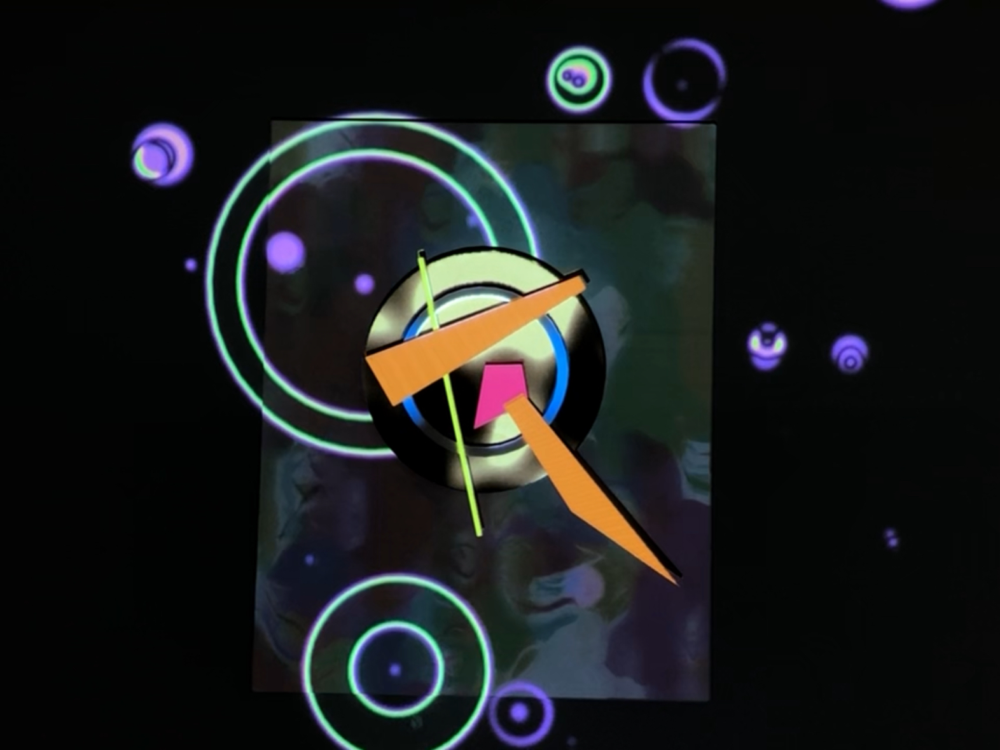

Small Worlds IV
by Liz Phillips

An interactive audio-visual projection mapping. Taking inspiration from the abstract geometric shapes of Kandinsky's "Small Worlds IV", each component of the sculpture reacts to sound and music in a different way. The colors, shapes, and textures move with the rhythm, with some parts representing bass frequencies and other representing high frequencies. The 3D printed components were modeled in Fusion 360, and the visuals are created with TouchDesigner.
TV Head
by Liz Phillips
This is a CRT television that's been gutted, painted, and had the screen replaced with an LED array. The array was hand-soldered, and is controlled via an Adafruit Circuit Playground microcontroller. The screen can display different animated faces, and react to sound. The detachable "cat ears" were 3D modeled and printed, and house two bluetooth speakers that can play stereo audio. The entire thing is designed to be portable and worn like a helmet, and the screen is transluscent from the inside.
The wearer's voice is quite muffled from the outside! I am planning to add a microphone so that the voice can be played externally, possibly with fun voice modulation effects.
Syn-C
by Liz Phillips

A simple music visualizer using p5.js and Gibber. Drums, chords, and melodies are represented with different shapes, colors, and movements.